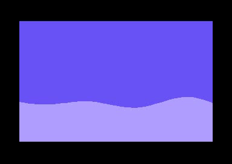
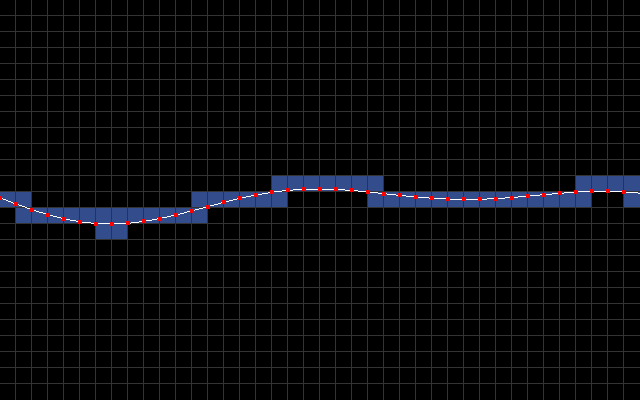
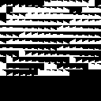
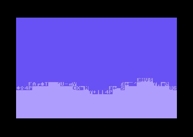

Break down of a C64 demo effect
So I recently made this little sinewave demo effect on the Commodore 64:

This generated a lot of lively discussion on twitter and /r/c64. A bunch of people were curious as to how it works and I promised to explain it on my blog.
The main idea is to use character mode with a custom character set. I sample y-coordinate every 8 pixels to produce a list of line segments [(0, y0), (8, y1), (16, y2), ..., (320, y40)]. In the below animation, you can see these line segments along with blue rectangles that signify which 8x8 character blocks intersect the line segments.

The goal then is to fill all the pixels below a line segment with light blue and everything above it with dark blue.
Here’s how you might code this up in Python:
# Compute sine wave by stepping every 8th pixel
ypos = [sinewave(phase, x) for x in range(0, 320 + 8, 8)]
clear_screen(BLUE)
# Loop through each line segment
for x in range(0, 320 // 8):
x0 = x * 8
x1 = x * 8 + 8
y0 = ypos[x]
y1 = ypos[x + 1]
# Fill everything below the (x0,y0)-(x1,y1) line segment
# with LIGHT_BLUE
fill_polygon([(x0, y0), (x1, y1), (x1, 200), (x0, 200)], LIGHT_BLUE)Unfortunately using a polygon fill routine in C64 bitmap mode would be pretty slow. To make this run fast, I precompute the different ways a line segment can intersect 8x8 character blocks using an edge function rasterizer written in Python. Here’s an image that shows some combinations of a line hitting 3 vertically stacked 8x8 blocks:
Here’s Python code for the block rasterizer:
# one bit of subpixel precision
subpix = 2
def mk8x8(yoffs, a, b, c):
arr = [0 for x in range(8 * 8)]
for y in range(0, 8):
yy = (y + yoffs) * subpix
for x in range(0, 8):
xx = x * subpix
if a * xx + b * yy + c >= 0.0:
arr[x + y * 8] = 1
return arr
def construct_fill_table():
x0 = 0
x1 = 8 * subpix
fill_tbl = [None for x in range(8 * subpix)]
for y0 in range(0, 8 * subpix):
fill_tbl[y0] = [None for x in range(0, 8 * subpix)]
for yi1 in range(-4 * subpix, 4 * subpix):
y1 = y0 + yi1
a = -(y1 - y0)
b = (x1 - x0)
c = -(a * x0 + b * y0)
chr_a = mk8x8(-8, a, b, c)
chr_b = mk8x8(0, a, b, c)
chr_c = mk8x8(8, a, b, c)
fill_tbl[y0][yi1 + 4 * subpix] = [chr_a, chr_b, chr_c]
return fill_tblA Python renderer using the table generated construct_fill_table():
def draw_fills(ypos):
for xi in range(0, 320 // 8):
x = xi * 8
y0 = int((ypos[xi] * subpix))
y1 = int((ypos[xi + 1] * subpix))
yy0 = y0 & ~(8 * subpix - 1)
yy1 = y1 & ~(8 * subpix - 1)
y0 -= yy0
y1 -= yy0
chrs = fill_tbl[y0][y1 - y0 + 4 * subpix]
blit_8x8(x, yy0 / subpix - 8, chrs[0])
blit_8x8(x, yy0 / subpix, chrs[1])
blit_8x8(x, yy0 / subpix + 8, chrs[2])Note that in the above code, each entry in the fill_tbl 2d-array is a list 3 character bitmaps. A character bitmap is a 64 entry list of zeros and ones. To make use of this on the C64, you need to turn this data into two separate arrays: the actual character set and an array indexed by y0, y1 that returns a list of 3 character indices.
Here’s how these two tables look like. First the charset:

..and the character index table ($20 is the space character, ie., an empty block, $a0 is a fully filled 8x8 block):
y0y1tbl:
.byte $00, $a0, $a0, $a0
.byte $02, $0e, $a0, $a0
.byte $0f, $10, $a0, $a0
.byte $1b, $24, $a0, $a0
... 252 more entries ...If you’d run the C64 equivalent of the above Python routine on the default charset, you’d see something like this:

Since I have full control over the sine animation, I choose animation parameters that make the line segments behave “nicely”. Niceness is defined as follows: let (x0, y0) and (x0 + 8, y1) be the end points of a line segment. The segment behaves “nicely” if it satisfies the following condition: |y0 − y1| < c (where c is some small number, in my case 8). This is required in order to keep the fill_tbl at a reasonable size and to limit the number of unique 8x8 characters (since the hardware character set is only 256 entries).
That’s about all there is to it, I guess.